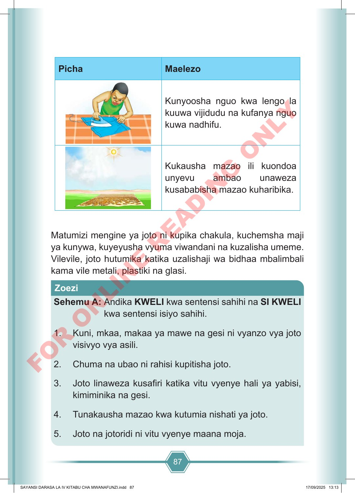

87 Picha Maelezo Kunyoosha nguo kwa lengo la kuuwa vijidudu na kufanya nguo kuwa nadhifu. Kukausha mazao ili kuondoa unyevu ambao unaweza kusababisha mazao kuharibika. Matumizi mengine ya joto ni kupika chakula, kuchemsha maji ya kunywa, kuyeyusha vyuma viwandani na kuzalisha umeme. Vilevile, joto hutumika katika uzalishaji wa bidhaa mbalimbali kama vile metali, plastiki na glasi. Sehemu A: Andika KWELI kwa sentensi sahihi na SI KWELI kwa sentensi isiyo sahihi. 1. Kuni, mkaa, makaa ya mawe na gesi ni vyanzo vya joto visivyo vya asili. 2. Chuma na ubao ni rahisi kupitisha joto. 3. Joto linaweza kusafiri katika vitu vyenye hali ya yabisi, kimiminika na gesi. 4. Tunakausha mazao kwa kutumia nishati ya joto. 5. Joto na jotoridi ni vitu vyenye maana moja. Zoezi SAYANSI DARASA LA IV KITABU CHA MWANAFUNZI.indd 87 SAYANSI DARASA LA IV KITABU CHA MWANAFUNZI.indd 87 17/09/2025 13:13 17/09/2025 13:13 F O R O N L I N E R E A D I N G O N L Y